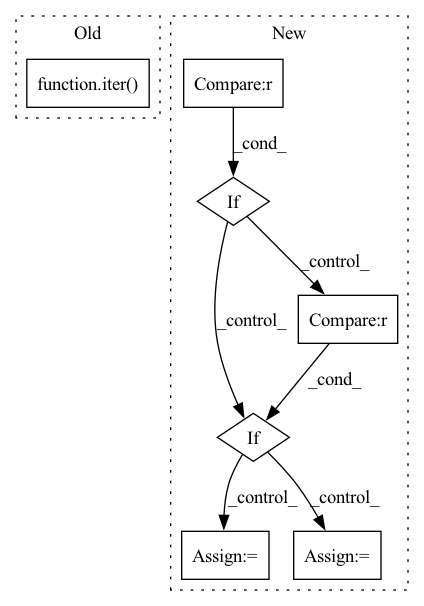

Pattern ID :34592
Before Change
batch_size=1,
shuffle=True,
num_workers=1)
samples = next(iter( totaltext_train_loader) )
samples = dict_to_device(samples, device="cpu")
for k, v in samples.items():
if isinstance(v, torch.Tensor):After Change
train_dir = cfg.data[dataset_name].train_dir
train_gt_dir = cfg.data[dataset_name].train_gt_dir
if dataset_name == "totaltext" :
TextDatasetIter = TotalTextDatasetIter
elif dataset_name == "ctw1500" :
TextDatasetIter = CTW1500DatasetIter
elif dataset_name == "icdar2015":
TextDatasetIter = ICDAR2015DatasetIter
elif dataset_name == "msra_td500":
TextDatasetIter = MSRATD500DatasetIter
else:In pattern: SUPERPATTERN
Frequency: 3
Non-data size: 7
Instances Fragment ID: 99424588
Project Name: huyhoang17/db_text_minimal
Commit Name: afea2dfe00db383e3fb9e959e1fcfe375c277c8d
Time: 2020-06-19
Author: hoangphan0710@gmail.com
File Name: src/data_loaders.py
M Class Name: AnonimousClass
N Class Name: AnonimousClass
M Method Name: run(1)
N Method Name: run(1)
M Parent Class:
N Parent Class:
M File Name: src/data_loaders.py
N File Name: src/data_loaders.py
M Start Line: 209
M End Line: 219
N Start Line: 357
N End Line: 381
Before Change
class ORTCalibrationDataReader(CalibrationDataReader):
def __init__(self, calib_dataloader: DataLoader):
self._iter = iter( [{key: data[key].numpy() for key in data} for data in calib_dataloader])
def get_next(self):
return next(self._iter, None)
After Change
__slots__ = ["batch_size", "dataset", "_dataset_iter"]
def __init__(self, dataset: Dataset, batch_size: int = 1):
if dataset is None :
raise ValueError("Provided dataset is None.")
if batch_size <= 0 :
raise ValueError(f"Provided batch_size should be >= 1 (got: {batch_size}).")
self.dataset = dataset
self.batch_size = batch_size
self._dataset_iter = iter(self.dataset)
def get_next(self):
featurized_samples = None Fragment ID: 99424559
Project Name: huggingface/optimum
Commit Name: 8a993de9245ee7cb76f4730d9e0a50f9e76eae3a
Time: 2022-03-24
Author: mfuntowicz@users.noreply.github.com
File Name: optimum/onnxruntime/quantization.py
M Class Name: ORTCalibrationDataReader
N Class Name: ORTCalibrationDataReader
M Method Name: __init__(3)
N Method Name: __init__(2)
M Parent Class: CalibrationDataReader
N Parent Class: CalibrationDataReader
M File Name: optimum/onnxruntime/quantization.py
N File Name: optimum/onnxruntime/quantization.py
M Start Line: 62
M End Line: 62
N Start Line: 43
N End Line: 53
Before Change
super().__init__()
blocks = nn.ModuleList([])
for self_attn_block, cross_attn_block in zip(*[iter( input_blocks) ] * 2):
blocks.append(ReversibleSelfAttnBlock(*self_attn_block))
blocks.append(ReversibleCrossAttnBlock(*cross_attn_block))
After Change
blocks = nn.ModuleList([])
for block, block_type in zip(input_blocks, block_types):
if block_type == "self" :
reversible_klass = ReversibleSelfAttnBlock
elif block_type == "cross" :
reversible_klass = ReversibleCrossAttnBlock
elif block_type == "conv":
reversible_klass = ReversibleSelfAttnBlock
blocks.append(reversible_klass(*block))
Fragment ID: 99424579
Project Name: lucidrains/alphafold2
Commit Name: 435266a7595ba4f661efb0c3bb512e82a14f1fe6
Time: 2021-05-30
Author: lucidrains@gmail.com
File Name: alphafold2_pytorch/reversible.py
M Class Name: ReversibleSequence
N Class Name: ReversibleSequence
M Method Name: __init__(3)
N Method Name: __init__(2)
M Parent Class: nn.Module
N Parent Class: nn.Module
M File Name: alphafold2_pytorch/reversible.py
N File Name: alphafold2_pytorch/reversible.py
M Start Line: 306
M End Line: 310
N Start Line: 304
N End Line: 318